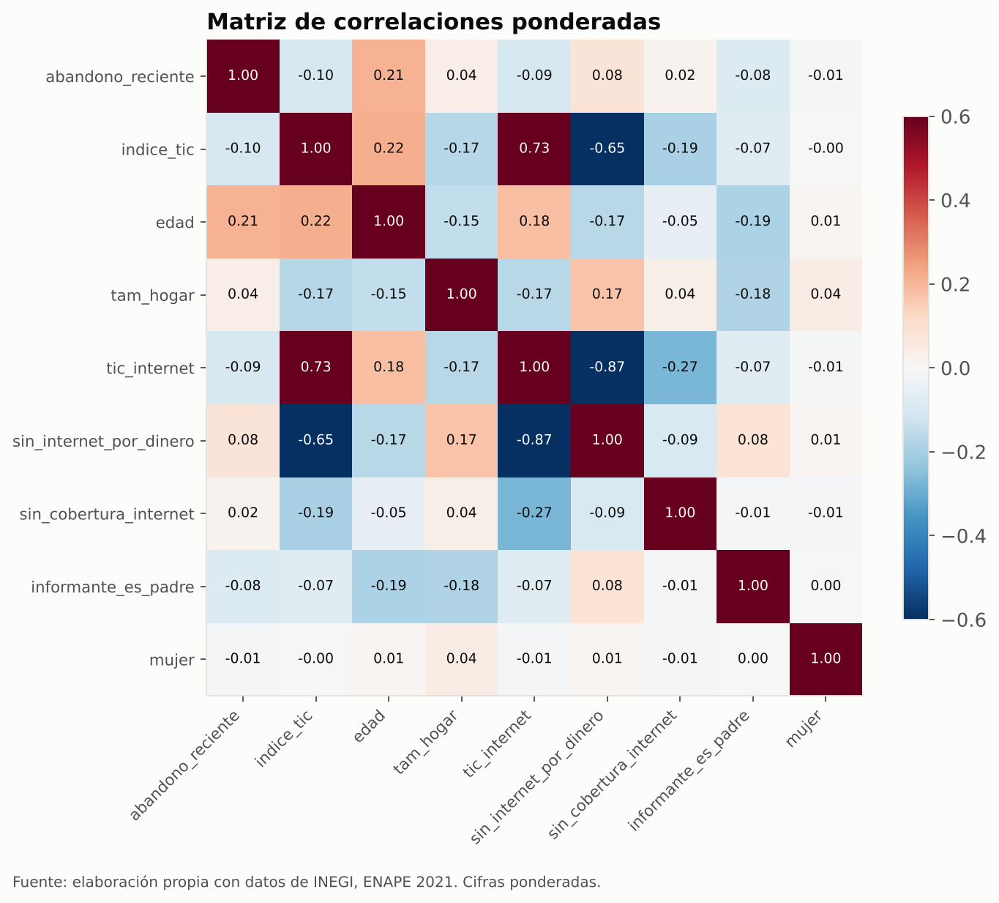
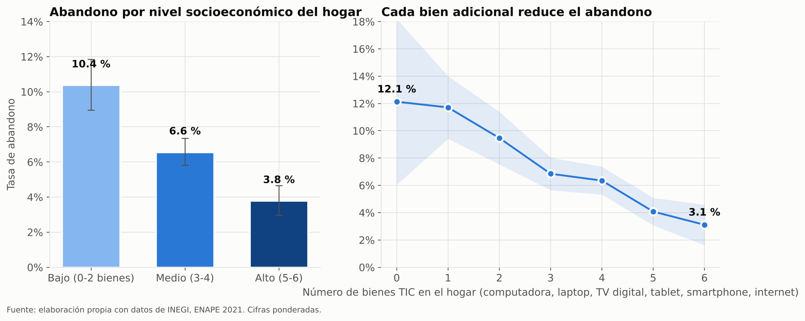
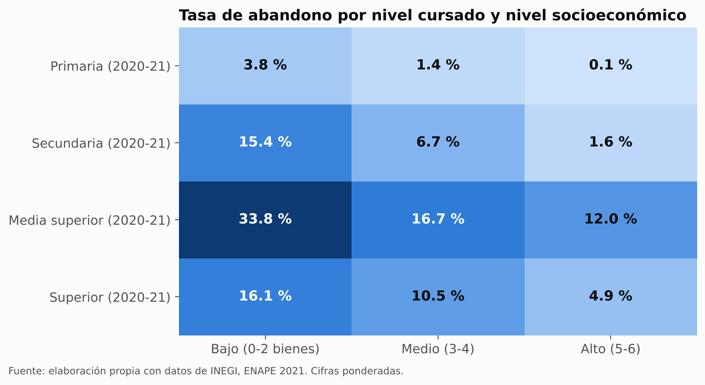
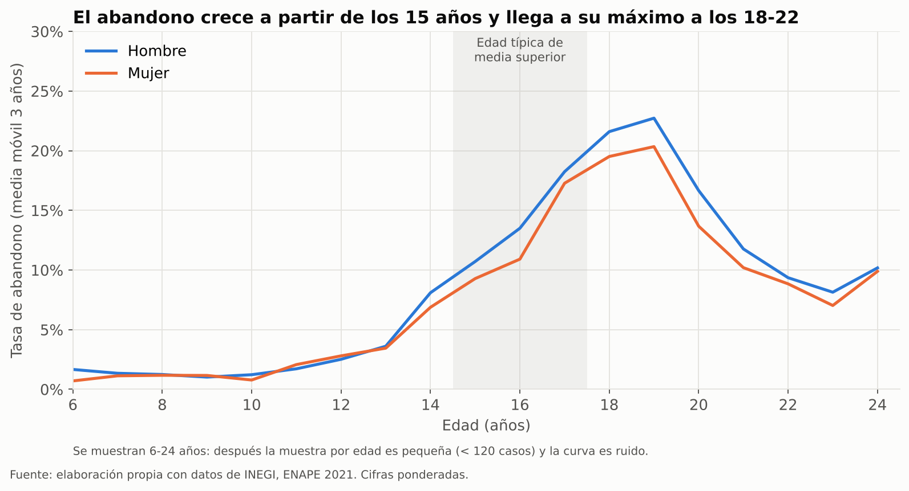
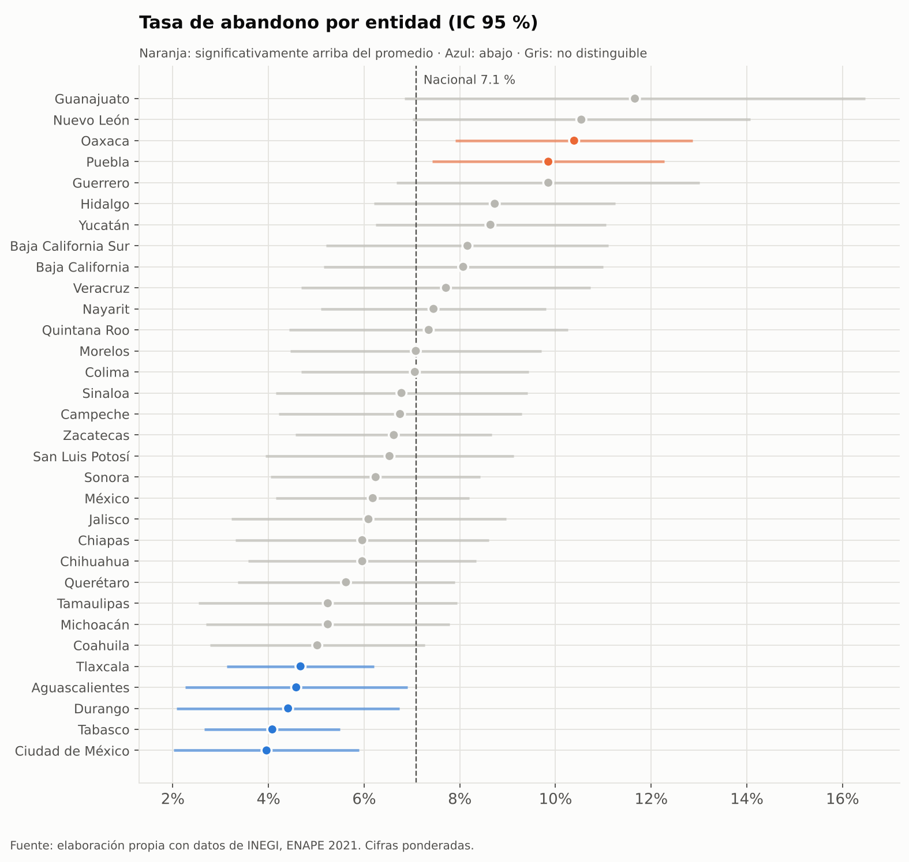
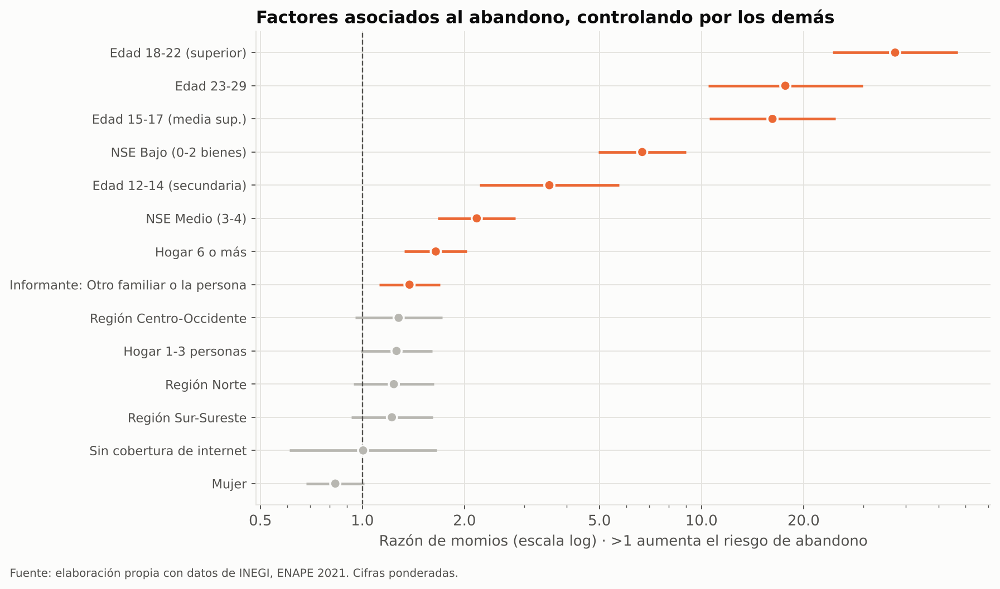
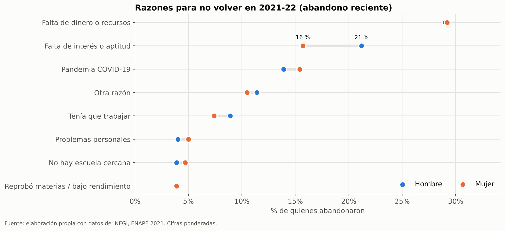
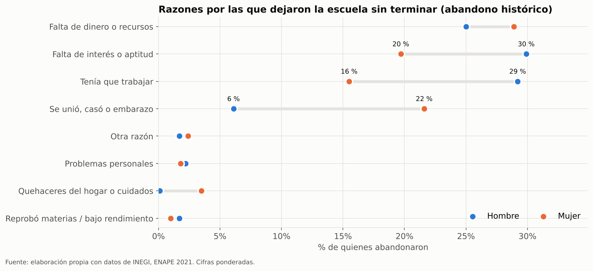
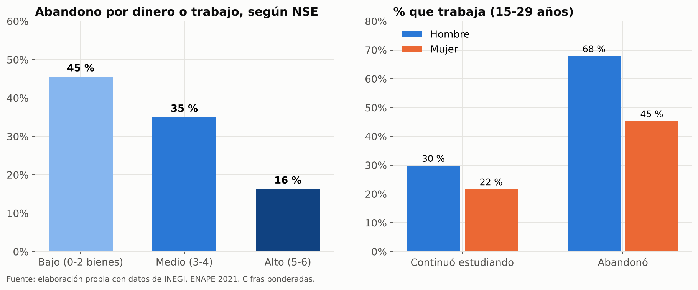

Manuel Aguirre · UDEM · Fuente: INEGI, ENAPE 2021. 32,343 registros (personas de 0-29 años) × 41 variables; representan 60.0 millones de personas. Estadísticos ponderados con el factor de expansión.
| Variable | Tipo | No vacíos | % vacío | Resumen |
|---|---|---|---|---|
folio | str | 32,343 | 0.0 % | 14,456 valores únicos |
renglon | str | 32,343 | 0.0 % | 13 valores únicos |
factor | float64 | 32,343 | 0.0 % | 3,881 valores únicos · suma 59,982,360 |
entidad | str | 32,343 | 0.0 % | México: 12.9 % · Jalisco: 6.9 % · Ciudad de México: 5.8 % · Veracruz: 5.8 % · Puebla: 5.6 % · Guanajuato: 5.2 % |
region | str | 32,343 | 0.0 % | Centro: 29.3 % · Centro-Occidente: 24.6 % · Norte: 23.4 % · Sur-Sureste: 22.7 % |
sexo | str | 32,343 | 0.0 % | Hombre: 50.2 % · Mujer: 49.8 % |
edad | int64 | 32,343 | 0.0 % | media pond. 14.72 · mediana pond. 15 · d.e. 8.29 · mín 0 · máx 29 |
grupo_edad | str | 32,343 | 0.0 % | 23-29: 21.9 % · 6-11 (primaria): 21.1 % · 18-22 (superior): 18.7 % · 12-14 (secundaria): 10.7 % · 15-17 (media sup.): 10.3 % · 3-5: 9.6 % |
informante_parentesco | str | 32,343 | 0.0 % | Madre: 38.9 % · Padre: 17.3 % · La propia persona: 12.2 % · Hermano(a): 10.3 % · Abuelo(a): 8.2 % · Tío(a): 4.6 % |
informante_padre_madre | str | 32,343 | 0.0 % | Madre/padre: 56.2 % · Otro familiar o la persona: 43.8 % |
tam_hogar | int64 | 32,343 | 0.0 % | media pond. 5.62 · mediana pond. 5 · d.e. 2.77 · mín 1 · máx 20 |
tam_hogar_grupo | str | 32,343 | 0.0 % | 4-5 personas: 43.0 % · 6 o más: 40.4 % · 1-3 personas: 16.6 % |
inscrito_2020_21 | str | 30,288 | 6.4 % | Sí: 55.3 % · No: 36.9 % · (vacío): 7.8 % |
tipo_escuela_2020_21 | str | 20,064 | 38.0 % | Pública: 49.7 % · (vacío): 44.7 % · Privada: 5.6 % |
nivel_2020_21 | str | 20,064 | 38.0 % | (vacío): 44.7 % · Primaria: 21.7 % · Secundaria: 10.1 % · Licenciatura: 7.4 % · Bachillerato general: 6.9 % · Preescolar: 6.9 % |
nivel_agrupado_2020_21 | str | 20,064 | 38.0 % | (vacío): 44.7 % · Primaria: 21.7 % · Secundaria: 10.1 % · Media superior: 8.5 % · Superior: 7.9 % · Preescolar/inicial: 7.1 % |
concluyo_2020_21 | str | 19,973 | 38.2 % | Sí: 54.0 % · (vacío): 45.0 % · No: 1.0 % |
razon_no_concluyo_2020_21 | str | 388 | 98.8 % | (vacío): 99.0 % · Reprobó materias / bajo rendimiento: 0.2 % · Falta de dinero o recursos: 0.2 % · Pandemia COVID-19: 0.2 % · Falta de interés o aptitud: 0.2 % · Otra razón: 0.0 % |
inscrito_2021_22 | str | 30,288 | 6.4 % | Sí: 55.0 % · No: 37.2 % · (vacío): 7.8 % |
razon_no_inscripcion_2021_22 | str | 10,633 | 67.1 % | (vacío): 62.8 % · Logró su meta educativa: 7.8 % · Falta de dinero o recursos: 6.7 % · Falta de interés o aptitud: 6.1 % · Tenía que trabajar: 5.9 % · Se unió, casó o embarazo: 3.0 % |
abandono_reciente | float64 | 18,207 | 43.7 % | (vacío): 50.1 % · 0.0: 46.4 % · 1.0: 3.5 % |
asistio_alguna_vez | str | 8,902 | 72.5 % | (vacío): 67.7 % · Sí: 29.2 % · No: 3.1 % |
nivel_alcanzado | str | 8,100 | 75.0 % | (vacío): 70.8 % · Bachillerato general: 8.8 % · Secundaria: 7.9 % · Licenciatura: 6.9 % · Primaria: 2.7 % · Bachillerato tecnológico: 1.7 % |
edad_dejo_escuela | float64 | 7,885 | 75.6 % | media pond. 17.85 · mediana pond. 18 · d.e. 3.81 · mín 1 · máx 28 |
razon_dejo_escuela | str | 8,100 | 75.0 % | (vacío): 70.8 % · Falta de dinero o recursos: 6.6 % · Falta de interés o aptitud: 6.1 % · Tenía que trabajar: 5.5 % · Terminó sus estudios / logró su meta: 4.8 % · Se unió, casó o embarazo: 3.3 % |
abandono_historico | float64 | 8,095 | 75.0 % | (vacío): 70.8 % · 1.0: 24.4 % · 0.0: 4.8 % |
piensa_retomar | str | 9,831 | 69.6 % | (vacío): 65.9 % · No: 19.1 % · Sí: 9.8 % · No sabe: 5.3 % |
condicion_actividad | str | 18,114 | 44.0 % | (vacío): 45.7 % · Trabajó: 27.0 % · Estudia u otra situación: 23.4 % · Ayudó en negocio familiar o campo: 1.7 % · Buscó trabajo: 1.4 % · Vendió o elaboró productos: 0.5 % |
trabaja | float64 | 18,114 | 44.0 % | (vacío): 45.7 % · 1.0: 29.5 % · 0.0: 24.8 % |
escolaridad | str | 30,288 | 6.4 % | Primaria: 24.6 % · Media superior: 20.0 % · Secundaria: 19.0 % · Superior: 14.6 % · (vacío): 7.8 % · Preescolar: 7.0 % |
tic_computadora | int64 | 32,343 | 0.0 % | 0: 80.5 % · 1: 19.5 % |
tic_laptop | int64 | 32,343 | 0.0 % | 0: 60.3 % · 1: 39.7 % |
tic_tv | int64 | 32,343 | 0.0 % | 1: 76.9 % · 0: 23.1 % |
tic_tablet | int64 | 32,343 | 0.0 % | 0: 79.1 % · 1: 20.9 % |
tic_smartphone | int64 | 32,343 | 0.0 % | 1: 95.4 % · 0: 4.6 % |
tic_internet | int64 | 32,343 | 0.0 % | 1: 68.8 % · 0: 31.2 % |
indice_tic | int64 | 32,343 | 0.0 % | media pond. 3.21 · mediana pond. 3 · d.e. 1.44 · mín 0 · máx 6 |
nse_tic | str | 32,343 | 0.0 % | Medio (3-4): 46.9 % · Bajo (0-2 bienes): 33.4 % · Alto (5-6): 19.7 % |
razon_sin_internet | str | 9,262 | 71.4 % | (vacío): 68.8 % · Falta de dinero: 23.8 % · No hay servicio en la zona: 3.0 % · No le interesa / no lo necesita: 2.6 % · Tiene acceso en otro lugar: 0.8 % · Otra razón: 0.5 % |
sin_internet_por_dinero | int64 | 32,343 | 0.0 % | 0: 76.2 % · 1: 23.8 % |
sin_cobertura_internet | int64 | 32,343 | 0.0 % | 0: 97.0 % · 1: 3.0 % |
Los vacíos son estructurales: cada pregunta solo aplica a su subpoblación (p. ej. la razón de no inscripción solo a quien no se inscribió).
Tasa de abandono escolar 2020-21 → 2021-22 (6-29 años inscritos en 2020-21): 7.1 % (IC 95 % 6.5–7.7), 2.12 millones de personas.
| tasa_% | ic_inf | ic_sup | casos_muestra | poblacion_millones | abandonos_millones | |
|---|---|---|---|---|---|---|
| sexo | ||||||
| Hombre | 7.24 | 6.44 | 8.05 | 9,329.00 | 14.89 | 1.08 |
| Mujer | 6.94 | 6.09 | 7.79 | 8,878.00 | 15.05 | 1.04 |
| tasa_% | ic_inf | ic_sup | casos_muestra | poblacion_millones | abandonos_millones | |
|---|---|---|---|---|---|---|
| nse_tic | ||||||
| Bajo (0-2 bienes) | 10.39 | 8.94 | 11.85 | 4,932.00 | 8.98 | 0.93 |
| Medio (3-4) | 6.57 | 5.80 | 7.35 | 8,821.00 | 14.16 | 0.93 |
| Alto (5-6) | 3.80 | 2.96 | 4.64 | 4,454.00 | 6.80 | 0.26 |
| nse_tic | Bajo (0-2 bienes) | Medio (3-4) | Alto (5-6) |
|---|---|---|---|
| nivel_agrupado_2020_21 | |||
| Primaria | 3.80 | 1.40 | 0.10 |
| Secundaria | 15.40 | 6.70 | 1.60 |
| Media superior | 33.80 | 16.70 | 12.00 |
| Superior | 16.10 | 10.50 | 4.90 |
| tasa_% | ic_inf | ic_sup | casos_muestra | poblacion_millones | abandonos_millones | |
|---|---|---|---|---|---|---|
| region | ||||||
| Centro | 6.61 | 5.47 | 7.74 | 4,220.00 | 9.20 | 0.61 |
| Norte | 7.02 | 6.02 | 8.01 | 4,211.00 | 6.77 | 0.48 |
| Centro-Occidente | 7.17 | 5.84 | 8.51 | 4,820.00 | 7.14 | 0.51 |
| Sur-Sureste | 7.73 | 6.58 | 8.87 | 4,956.00 | 6.83 | 0.53 |
| media | mediana | desv_est | |||||||
|---|---|---|---|---|---|---|---|---|---|
| grupo | Total | Continuó | Abandonó | Total | Continuó | Abandonó | Total | Continuó | Abandonó |
| variable | |||||||||
| Edad (años) | 13.32 | 13.03 | 17.13 | 13.00 | 12.00 | 18.00 | 5.00 | 4.96 | 3.78 |
| Índice TIC del hogar (0-6) | 3.34 | 3.38 | 2.84 | 3.00 | 3.00 | 3.00 | 1.45 | 1.44 | 1.41 |
| Tamaño del hogar (personas) | 5.58 | 5.55 | 5.93 | 5.00 | 5.00 | 5.00 | 2.51 | 2.48 | 2.87 |
| Hogar con internet fijo (proporción) | 0.72 | 0.73 | 0.57 | 1.00 | 1.00 | 1.00 | 0.45 | 0.44 | 0.49 |
| Sin internet por falta de dinero (proporción) | 0.22 | 0.21 | 0.34 | 0.00 | 0.00 | 0.00 | 0.42 | 0.41 | 0.47 |
| abandono_reciente | indice_tic | edad | tam_hogar | tic_internet | sin_internet_por_dinero | sin_cobertura_internet | informante_es_padre | mujer | |
|---|---|---|---|---|---|---|---|---|---|
| abandono_reciente | 1.00 | -0.10 | 0.21 | 0.04 | -0.09 | 0.08 | 0.02 | -0.08 | -0.01 |
| indice_tic | -0.10 | 1.00 | 0.22 | -0.17 | 0.73 | -0.65 | -0.19 | -0.07 | -0.00 |
| edad | 0.21 | 0.22 | 1.00 | -0.15 | 0.18 | -0.17 | -0.05 | -0.19 | 0.01 |
| tam_hogar | 0.04 | -0.17 | -0.15 | 1.00 | -0.17 | 0.17 | 0.04 | -0.18 | 0.04 |
| tic_internet | -0.09 | 0.73 | 0.18 | -0.17 | 1.00 | -0.87 | -0.27 | -0.07 | -0.01 |
| sin_internet_por_dinero | 0.08 | -0.65 | -0.17 | 0.17 | -0.87 | 1.00 | -0.09 | 0.08 | 0.01 |
| sin_cobertura_internet | 0.02 | -0.19 | -0.05 | 0.04 | -0.27 | -0.09 | 1.00 | -0.01 | -0.01 |
| informante_es_padre | -0.08 | -0.07 | -0.19 | -0.18 | -0.07 | 0.08 | -0.01 | 1.00 | 0.00 |
| mujer | -0.01 | -0.00 | 0.01 | 0.04 | -0.01 | 0.01 | -0.01 | 0.00 | 1.00 |
| coef | ee_robusto | odds_ratio | or_ic_inf | or_ic_sup | p_valor | |
|---|---|---|---|---|---|---|
| const | -6.25 | 0.26 | 0.00 | 0.00 | 0.00 | 0.00 |
| sexo_Mujer | -0.18 | 0.10 | 0.83 | 0.68 | 1.01 | 0.06 |
| nse_tic_Bajo (0-2 bienes) | 1.90 | 0.15 | 6.69 | 4.97 | 8.98 | 0.00 |
| nse_tic_Medio (3-4) | 0.78 | 0.13 | 2.17 | 1.67 | 2.83 | 0.00 |
| region_Centro-Occidente | 0.25 | 0.15 | 1.28 | 0.95 | 1.72 | 0.10 |
| region_Norte | 0.21 | 0.14 | 1.24 | 0.94 | 1.63 | 0.12 |
| region_Sur-Sureste | 0.20 | 0.14 | 1.22 | 0.93 | 1.61 | 0.15 |
| grupo_edad_12-14 (secundaria) | 1.27 | 0.24 | 3.56 | 2.22 | 5.71 | 0.00 |
| grupo_edad_15-17 (media sup.) | 2.79 | 0.22 | 16.19 | 10.56 | 24.82 | 0.00 |
| grupo_edad_18-22 (superior) | 3.62 | 0.22 | 37.24 | 24.41 | 56.82 | 0.00 |
| grupo_edad_23-29 | 2.87 | 0.27 | 17.67 | 10.46 | 29.86 | 0.00 |
| informante_padre_madre_Otro familiar o la persona | 0.32 | 0.10 | 1.38 | 1.12 | 1.69 | 0.00 |
| tam_hogar_grupo_1-3 personas | 0.23 | 0.12 | 1.26 | 0.99 | 1.60 | 0.06 |
| tam_hogar_grupo_6 o más | 0.50 | 0.11 | 1.65 | 1.33 | 2.03 | 0.00 |
| sin_cobertura_internet | 0.01 | 0.26 | 1.00 | 0.61 | 1.66 | 0.98 |
| sexo | Hombre | Mujer |
|---|---|---|
| razon_no_inscripcion_2021_22 | ||
| Falta de dinero o recursos | 29.00 | 29.20 |
| Falta de interés o aptitud | 21.20 | 15.70 |
| Pandemia COVID-19 | 13.90 | 15.40 |
| Otra razón | 11.40 | 10.50 |
| Tenía que trabajar | 8.90 | 7.40 |
| Problemas personales | 4.00 | 5.00 |
| No hay escuela cercana | 3.90 | 4.70 |
| Reprobó materias / bajo rendimiento | 3.90 | 3.90 |
| sexo | Hombre | Mujer |
|---|---|---|
| razon_dejo_escuela | ||
| Falta de dinero o recursos | 25.00 | 28.90 |
| Falta de interés o aptitud | 29.90 | 19.70 |
| Tenía que trabajar | 29.20 | 15.50 |
| Se unió, casó o embarazo | 6.10 | 21.60 |
| Otra razón | 1.70 | 2.40 |
| Problemas personales | 2.20 | 1.80 |
| Quehaceres del hogar o cuidados | 0.10 | 3.50 |
| Reprobó materias / bajo rendimiento | 1.70 | 1.00 |








